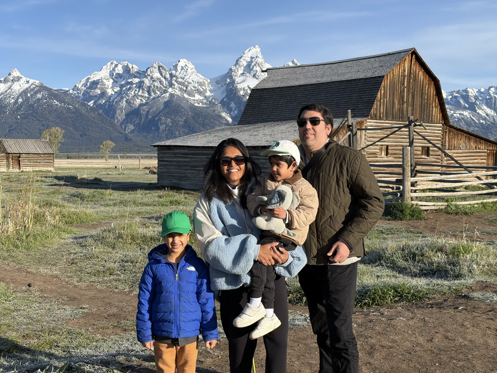
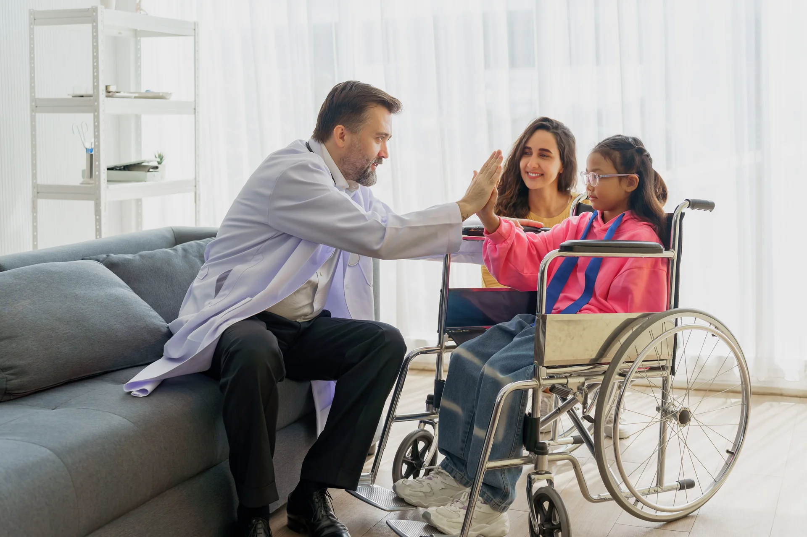

Connect with other families
Explore two active Facebook communities for peer support, lived experience, and practical advice.

Explore two active Facebook communities for peer support, lived experience, and practical advice.

Find multidisciplinary care and talk with the Muscular Dystrophy Association’s support team.
ClinicalTrials.gov has two studies recruiting people with LMNA variants.
These tools help with rare-disease navigation and family-history prep.
A patient registry is a safe and secure place where people with EDMD and their families can share information about their diagnosis, symptoms, treatments, and everyday experiences. Every person's story is important. When many people join together, researchers can learn more about Emery-Dreifuss muscular dystrophy (EDMD) and work toward better care and new treatments.
When you join a patient registry, you can help:
Researchers use registry information to learn how EDMD changes over time and to answer important questions about the disease.
Registry data helps researchers and drug companies plan clinical trials and develop new treatments for EDMD.
By learning from many people living with EDMD, doctors can better understand the disease and improve care for patients and families.
Registries can help connect you with research studies, surveys, and clinical trials that may be a good fit for you or your family.
EDMD affects everyone differently. People of all ages, backgrounds, and genetic types are important. Every person who joins helps create a more complete picture of EDMD.
Your privacy is important. Patient registries use strong safeguards to protect your personal information. Joining a registry is always your choice, and you decide what information you want to share.
Every person and every family adds an important piece to the EDMD story. By joining a patient registry, you are helping researchers better understand EDMD and move closer to new treatments and better care for everyone living with the disease.